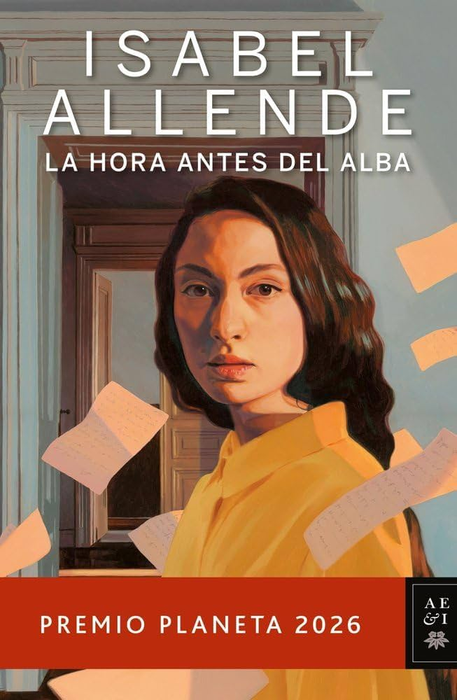

Tu fuente de información sobre los libros actuales de todos los tipos
| Genero | Autor | Titulo | Premio |
|---|---|---|---|
| Novela | Isabel Allende | La hora antes del alba | Premio Planeta 2026 |
| Misterio | Dolores Redondo | Todas las noches, todas las ciudades | Mas vendido de genero |
| Novela | Cosamala | Alana S. Portero | Top 3 |
